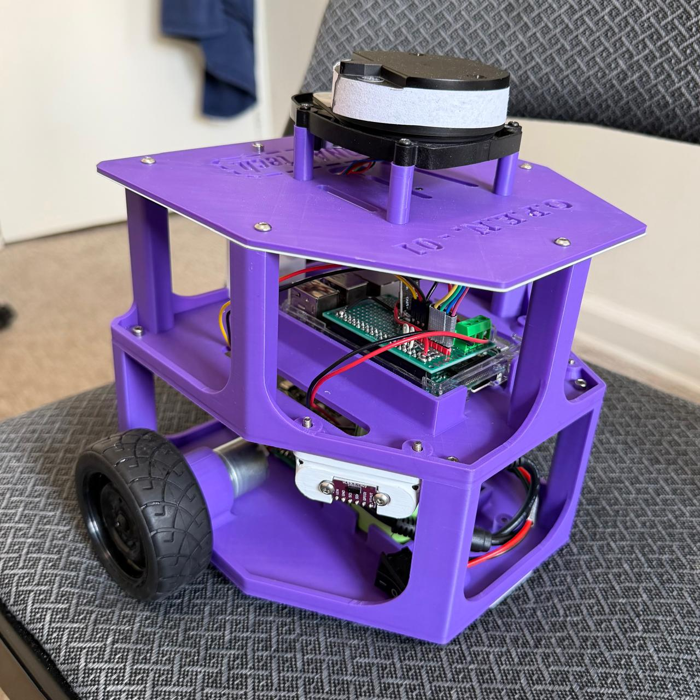
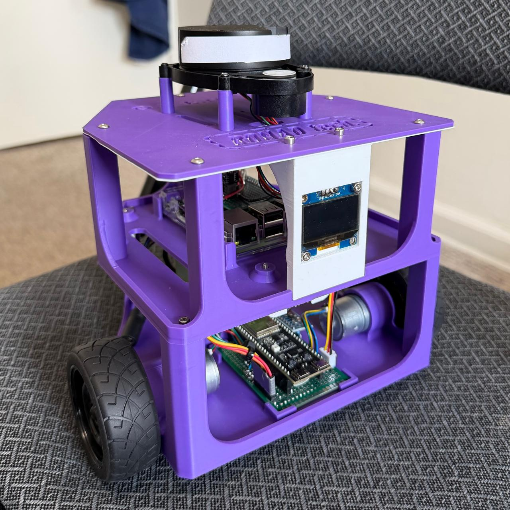

Project
OPEN-01: Open-Source Differential Drive Robot Active
A low-cost, fully open-source alternative to the TurtleBot3, built around an ESP32-S2 running bare-metal ESP-IDF firmware and a Raspberry Pi 3B running ROS2 Humble. The platform spans the full stack: real-time embedded firmware, a custom binary telemetry protocol, ROS2 sensor fusion via EKF, SLAM, and autonomous navigation with Nav2.
Robot Build Photos
Current hardware build of OPEN-01 showing the 3D-printed chassis, Raspberry Pi based ROS2 bridge, ESP32-S2 controller board, integrated display, and top-mounted RPLidar.

Front-side view showing the Raspberry Pi bridge layer, wiring layout, power distribution, and top-mounted RPLidar module.

Rear-side view highlighting the integrated OLED display, lower embedded controller board, and compact two-level chassis layout.
System Architecture
Three-tier layered architecture: real-time firmware on ESP32-S2, ROS2 bridge on Raspberry Pi, and full autonomy stack on the dev laptop over WiFi.
- Motor PID (25kHz PWM)
- MPU6500 IMU (I²C Bus 1)
- 3× VL53L0X ToF (I²C Bus 0)
- Wheel encoder odometry
- Battery ADC monitoring
- UART TX @ 460800 baud
- CRC16-CCITT framing
- serial_bridge node
- Parses binary protocol
- Publishes 10 ROS2 topics
- RPLidar A1M8 /scan node
- robot_state_publisher
- Systemd autostart
- ROS2 Humble
- robot_localization EKF
- /odometry/filtered @ 30Hz
- SLAM Toolbox (/map)
- Nav2 autonomous nav
- RViz2 visualization
- Full URDF + TF tree
- ROS2 Jazzy
Key Engineering Challenges
Custom Binary Telemetry Protocol
Standard ASCII serial was too slow for multi-sensor streaming. Designed a compact binary protocol over UART at 460800 baud with CRC16-CCITT framing, achieving stable 40 Hz multi-sensor streaming (odometry, IMU, 3× ToF, battery) with zero packet loss.
VL53L0X I²C Address Conflict
All three VL53L0X sensors share the same default I²C address (0x29). Resolved by wiring dedicated XSHUT pins (GPIO10/11/12) and sequentially powering each sensor at boot to assign unique addresses (0x30, 0x31, 0x32) before releasing all three simultaneously.
IMU-Only EKF Fusion Limitation
MPU6500 has no magnetometer, making absolute heading fusion unreliable. Selectively fused only wheel odometry and IMU angular velocity (vyaw) in robot_localization EKF, avoiding orientation drift while still improving localization over raw odometry alone.
FIT0441 Motor Quirks
FIT0441 brushless motors use inverted PWM logic (255 = stop, 0 = full speed) and require a startup kick to overcome static friction. FG pins are open-collector and need 5kΩ pull-ups to 3.3V for reliable encoder pulse counting.
Published ROS2 Topics
Firmware Architecture
Clean layered separation: constants live in config/, shared state in common/,
hardware drivers in drivers/, board abstraction in hal/, reusable robotics logic
in services/, and FreeRTOS task entry points in tasks/. All tasks are pinned to
Core 0 (ESP32-S2 is single-core).
FreeRTOS Tasks
- IMU Task — MPU6500 read @ 100 Hz
- ToF Task — 3× VL53L0X ranging
- Motor Task — PID + PWM output
- Odometry Task — encoder kinematics
- Comms Task — UART TX serialization
- Battery Task — ADC sampling
Hardware
- MCU: ESP32-S2 (single core)
- Motors: FIT0441 brushless DC
- IMU: MPU6500 (WHO_AM_I=0x70)
- ToF: 3× VL53L0X (Pololu init)
- LiDAR: RPLidar A1M8
- Battery: 3S Li-Ion (12.6V / 9.0V cutoff)
ESP32-S2 Pin Map
Project Status
Firmware
- ESP-IDF firmware scaffold
- Shared robot state
- Motor control task + PID
- IMU task (MPU6500)
- ToF task (3× VL53L0X)
- Odometry + kinematics
- Battery monitoring
- UART comms (custom binary protocol)
- Linux setup script + GUI launcher
ROS2 Stack
- Serial bridge node
- URDF robot description + TF tree
- RViz2 visualization
- Systemd autostart
- robot_localization EKF
- RPLidar A1M8 integration
- SLAM Toolbox
- Nav2 autonomous navigation
- PID gain tuning